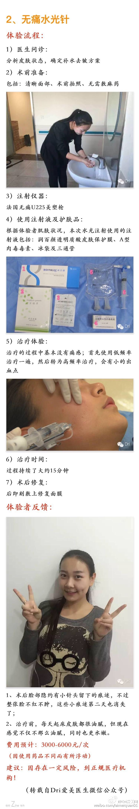
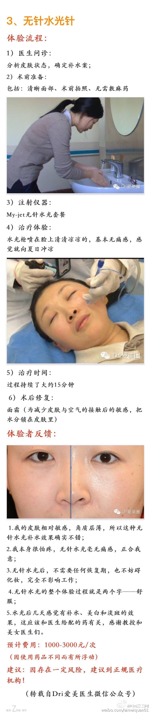
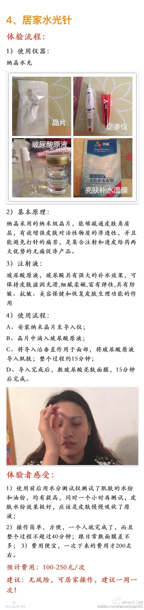

做过居家水光针，效果比敷面膜强很多。@Dri爱美圈:#试用体验# 水光针之对比篇：普通水光针VS无痛水光针VS 无针水光针VS居家水光针 最近热播的《太后》，不仅让众多姐妹都有了共同的新老公，同时35岁乔姐姐的冻龄美貌、水嫩嫩肌肤也引起了大家的关注。不管镜头多近，乔姐姐的肌肤都是那么白皙、水嫩，让人忍不住想咬一口 要想获得乔姐般的美肌，日常护理及保养肯定少不了，今天就跟大家介绍下补水的神器：水光针！